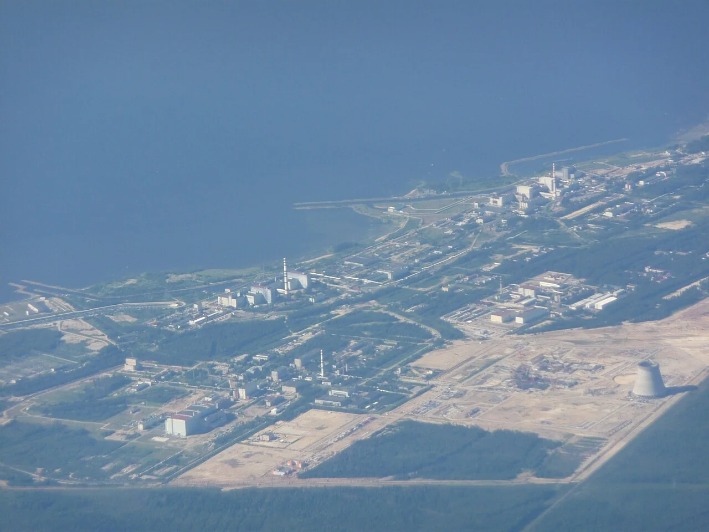
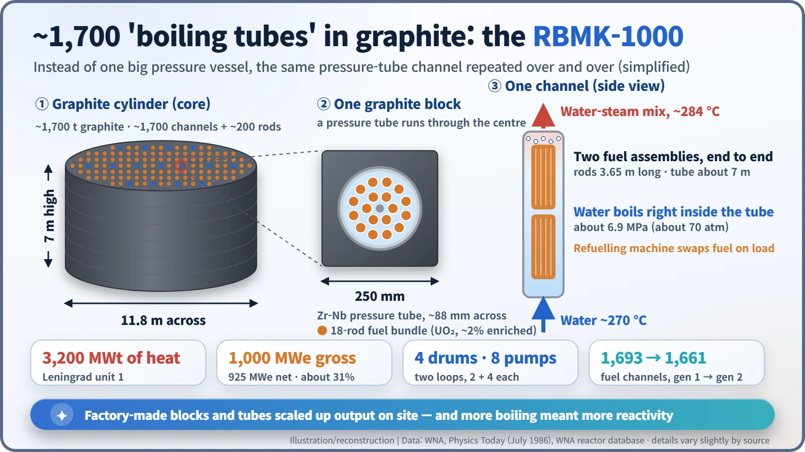
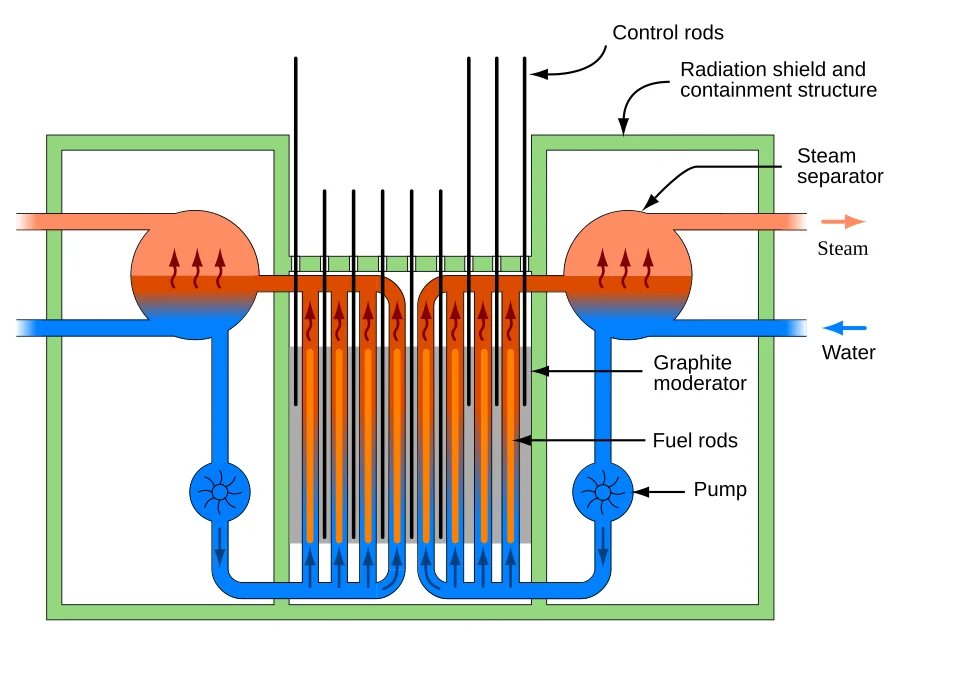
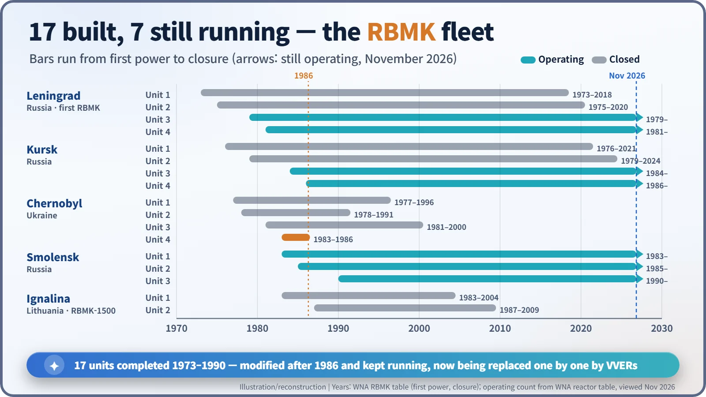

Nuclear History · 206
A Thousand Straws Instead of One Big Pot — How the Soviet Union Developed the RBMK Reactor (1964–1990)
Factory-made tubes and graphite blocks let the Soviet Union reach 1,000 megawatts years ahead of its own pressurised water reactors, and the same design carried a built-in physical weakness.
Designed in 1964–1966 by the Kurchatov Institute and NIKIET, the Soviet RBMK replaced one large pressure vessel with about 1,700 pressure tubes set in a graphite cylinder. The first unit, Leningrad 1, reached the grid on 21 December 1973; seventeen were completed by 1990, and seven still run in Russia.
Two years side by side
Put two years side by side: 1973 and 1980. The first is when the Soviet Union connected its first 1,000-megawatt-class reactor to the grid. The second is when it connected its first pressurised water reactor of the same size, the VVER-1000. The design that got there seven years earlier was an unusual one: a huge cylinder of graphite pierced by roughly 1,700 tubes. Its name was RBMK. [2]

If you can't build a bigger pot, add more straws
A light water reactor keeps its whole core inside one thick steel pressure vessel, a giant pressure cooker. Scale up the power and the pot has to grow too. In the 1960s Soviet heavy industry was not well placed to turn out many such vessels quickly. [5]
The RBMK changed the question. Why not push water through many narrow tubes instead? Each pressure tube, a little under 9 cm across, carries the pressure for its own small share of the fuel, and graphite blocks fill the space between the tubes. Factories can make tubes and blocks as standard parts, and builders stack them up on site. The name says as much: in Russian it is the initials of reaktor bolshoy moshchnosti kanalny, a "high-power channel-type reactor". [1] [4]
The idea had roots. Graphite moderation with water cooling was how the first plutonium production reactors in both the United States and the Soviet Union worked, and the Obninsk reactor (1954) and the prototype units at Beloyarsk (from 1964) also used graphite with channels. The RBMK took that experience to 3,200 MW of heat, more than a hundred times the 30 MW of Obninsk. [1] [4]
1964: two institutes, one design
The design work ran from 1964 to 1966. The Kurchatov Institute of Atomic Energy provided the science, and the engineering design came from NIKIET (then known as NII-8). They were led by Anatoly Aleksandrov (1903–1994), director of the Kurchatov Institute, and Nikolai Dollezhal (1899–2000), who had designed the Obninsk reactor. Sources differ on how to divide the credit between the two men. [1] [5]
The first unit rose at Sosnovy Bor, west of Leningrad (today St Petersburg). Leningrad unit 1 was started on 1 March 1970, went critical on 12 September 1973, was connected to the grid on 21 December 1973 and entered commercial operation on 1 November 1974. It produced 1,000 MW of electricity gross, 925 MW net. [2]
Inside the graphite cylinder
The core is a graphite cylinder 7 m high and 11.8 m across. It is built from columns of graphite blocks 25 cm on a side, each with a zirconium-alloy pressure tube running through its centre. First-generation units had 1,693 fuel channels, second-generation units 1,661, plus roughly 200 channels for control rods. [4] [5]

Each tube holds two bundles of 18 fuel rods, one above the other. The fuel is uranium oxide enriched to about 2% uranium-235. Water at about 270 °C enters at the bottom and boils inside the tube itself, and four steam separators pick out the steam and send it to the turbines. [1] [4]

Strengths and weaknesses from the same body
The appeal of the channel design was clear. A refuelling machine above the core could swap fuel channel by channel without shutting the reactor down, and adding more channels raised the output. At Ignalina in Lithuania the larger RBMK-1500 was built, with 4,800 MW of heat. Because fuel could be removed at any time, Western analysts noted that the design could also produce plutonium suitable for weapons; Physics Today wrote in 1986, however, that there was no indication the Chernobyl units had been run for that purpose. [1] [4]
The weakness came from the same arrangement. In an RBMK, the graphite does the job of slowing neutrons down, while the water mostly absorbs some of them. So when the water boils and steam bubbles form, fewer neutrons are absorbed and reactivity rises. Engineers call this a positive void coefficient. In a light water reactor, where the water itself is the moderator, more bubbles mean less moderation and the power drops. The RBMK needed a complex computerised control system to keep this tendency in check. It also had no large Western-style containment building; instead the piping areas were enclosed in sealed compartments with pressure-suppression pools. [1] [4]
In the 1986 accident at Chernobyl unit 4, this void coefficient and the design of the control rods were identified as the design-related causes. Afterwards the reactors still in service were modified: 80–90 fixed absorbers were added, enrichment was raised from 2% to 2.4%, and the emergency rod insertion time was cut from 18 to 12 seconds. [1]
Seventeen built, seven still running
Between 1973 and 1990, seventeen RBMK units were completed at five sites in Russia, Ukraine and Lithuania. Ignalina closed its two units in 2004 and 2009 as a condition of Lithuania joining the European Union. Leningrad unit 1 shut down on 22 December 2018 after 45 years. [1] [2]
| Site | Units completed | First power | Status (Nov 2026) |
|---|---|---|---|
| Leningrad, Russia | 4 | 1973–1981 | Units 1–2 closed (2018, 2020); 3–4 operating |
| Kursk, Russia | 4 | 1976–1986 | Units 1–2 closed (2021, 2024); 3–4 operating |
| Chernobyl, Ukraine | 4 | 1977–1983 | All closed (unit 4 destroyed 1986; others 1991–2000) |
| Smolensk, Russia | 3 | 1983–1990 | All 3 operating |
| Ignalina, Lithuania (RBMK-1500) | 2 | 1983, 1987 | Closed 2004, 2009 |

According to the World Nuclear Association's reactor tables (viewed in November 2026), seven units are still running: two each at Kursk and Leningrad and three at Smolensk. In 2023 they produced just under a quarter of Russia's nuclear electricity. The original 30-year design life was stretched to 45 years through refurbishment, and new pressurised water reactors are now taking over from them one by one. [3]
The idea of adding more straws instead of building a bigger pot opened the way to building fast and big, and it brought a built-in physical weakness along with it. Few designs show as clearly that the choice of a reactor type starts with a country's factories and industrial base, not only with physics.